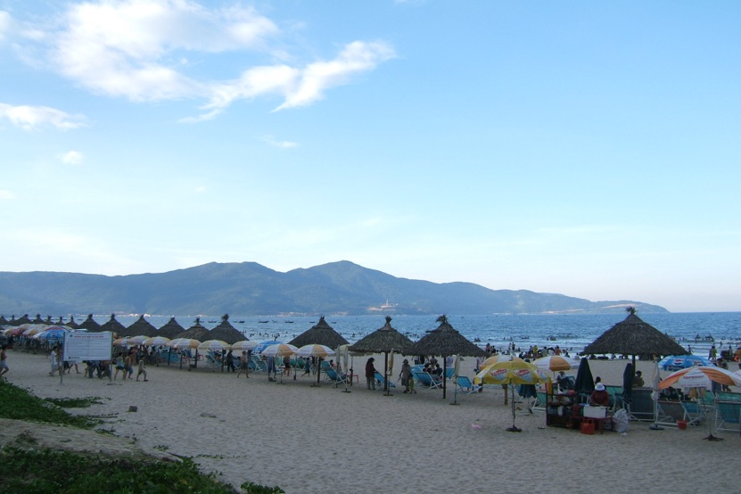
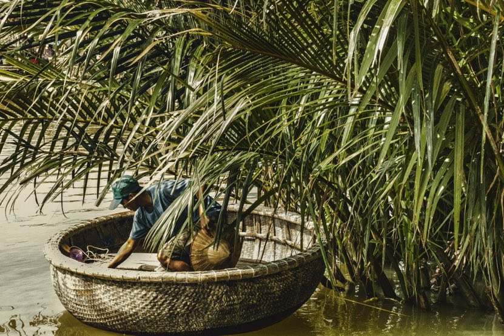

Living here
Is Da Nang a Good Place to Live With Kids?
Schools, neighbourhoods and weekends for families.
Bài viết này hiện chỉ có bản tiếng Anh. Menu và phần điều hướng đã chuyển sang tiếng Việt. Alice nói tiếng Việt và tiếng Anh, nhắn tin cho cô nếu bạn cần giải thích bằng tiếng Việt.
Key takeaways
- Five international schools serve Da Nang families, with published 2026/27 tuition from about $6,500 a year at The St. Nicholas School to about $25,500 for the top grades at Singapore International School.
- APU American International School and Singapore International School both sit in southern Ngu Hanh Son, so families who want a short school run usually rent there.
- In Alice Rentals listings, a three bedroom house or villa in Son Tra runs $950 to $3,055 a month, the cheapest way into a family home with outdoor space.
- Vinmec Da Nang International Hospital has a paediatrics and neonatology department, a maternity package and childhood vaccination packages.
- Da Nang scores 23.3 on Numbeo's crime index, less than half of Denver's 47.9.
Is Da Nang a good place to live with kids?
Yes, and it is one of the easier cities in Vietnam to do it in. Da Nang gives families a long public beach, low crime, five international schools with published fees, a private hospital with a children's department, and houses with gardens for what a two bedroom apartment costs in a big city.

I have housed families here since 2019, and the ones who settle fastest have one thing in common. They choose the school first, then the neighbourhood within twenty minutes of it, then the house. Done in that order, the rest of family life here is short drives, a beach after school and weekends that take very little planning.
Pick the school, then the neighbourhood, then the house. Families who do it in that order settle fastest.
Which international schools are in Da Nang?
Five schools publish fees for 2026/27, covering American, British and Cambridge, Singapore and IB programmes. On the International Schools Database, yearly tuition runs from 168.5 million dong, about $6,500, to 663.6 million dong, about $25,500.
| School | Curriculum | Ages | Where | Yearly tuition |
|---|---|---|---|---|
| APU American International School | American, with AP | 3 to 18 | Hoa Hai, southern Ngu Hanh Son | 249.5m to 597.4m ₫, about $9,600 to $23,000 |
| Singapore International School | Singapore and Cambridge, IGCSE and A Level | 2 to 18 | Phu My An, southern Ngu Hanh Son | 264.7m to 663.6m ₫, about $10,200 to $25,500 |
| Odyssey International School | IB candidate, PYP and MYP | 3 to 18 | Between Da Nang and Hoi An | 233m to 450m ₫, about $9,000 to $17,300 |
| Hoi An International School | Cambridge, Early Years to A Level | 2 to 18 | Hoi An | 215m to 510m ₫, about $8,300 to $19,600 |
| The St. Nicholas School | American, with a Vietnamese track | 2 to 18 | Cam Le | 168.5m to 271m ₫, about $6,500 to $10,400 |
APU and Singapore International School are the two that most of my expat families tour first, partly because both sit in southern Ngu Hanh Son, ten to twenty minutes from the beach districts. Odyssey suits families who want the IB: its admissions page says it is a candidate school for the Primary Years and Middle Years Programmes and aims for full authorization within 2026.
Book tours before you sign a lease, not after. Most schools ask for a placement test and a registration fee, and some popular year groups fill up. The guide for Americans in Da Nang covers visas and getting here, if you are moving from the US.
Five schools, three systems, and fees from about $6,500 to $25,500 a year. Tour two before you look at houses.
What does family life cost in Da Nang?
For a family of four with two children in international school, expect roughly $3,650 to $8,935 a month, depending mostly on the school and the house. Numbeo puts a family of four's living costs, before rent, at about $1,620 a month in Da Nang.
| Item | Lower end | Upper end |
|---|---|---|
| Living costs, excluding rent | $1,620 | $1,620 |
| Three bedroom house or villa | $950, Son Tra | $3,055, Son Tra |
| Tuition for two children | $1,080 | $4,260 |
| Total per month | $3,650 | $8,935 |
School fees are the line that moves the total most. A family choosing a mid priced school and a Son Tra house usually lands nearer the lower end, with room for a helper, weekend trips and eating out.
Housing a family here is cheap. School is the real budget decision.
Which neighbourhood is best for families?
Southern Ngu Hanh Son for the school run, Son Tra for space on a budget, and My An for walkability. Each one suits a different kind of family week.
| If you want | Live in | Typical rent | Why |
|---|---|---|---|
| A short school run to APU or Singapore International School | Southern Ngu Hanh Son, around Hoa Hai and Phu My An | Villas from $1,920 | Both schools are here, near the Marble Mountains and quieter beaches |
| A house with a garden on a budget | Son Tra | 3 bedroom house $950 to $3,055 | The cheapest standalone houses in the city, on quiet streets near the peninsula |
| To walk to the beach, cafes and other families | My An | 2 bedroom from $760, 3 bedroom house $2,105 to $4,700 | Flat, walkable streets behind My Khe beach, where most foreign families start |
| A pool, gym and security in one building | Han riverside or the My Khe beachfront | Luxury 3 bedroom $1,350 to $2,310+ | Towers such as The Filmore and Azura, with no garden to maintain |
Families with younger children often start in My An for the first few months, learn the city, then move closer to school once they know which one they want. The Son Tra and My An comparison goes street by street, and the luxury apartment guide covers the towers.
Live near the school you chose, not near the bars you used to go to.
What should families check before renting?
Five things, beyond the number of bedrooms. A family home gets used harder than a couple's apartment, so these are worth settling before the lease, not after.
- Floor level in the rainy season. Ground floors in the narrow An Thuong alleys and low streets near the river can flood between September and December. A house on raised ground or an apartment above the ground floor avoids the problem.
- Balconies, windows and stairs. Check railing heights and gaps, window locks and whether stairs have gates. Landlords will usually fit locks or a gate if you ask before signing.
- The pool. Private villa pools are rarely fenced. Ask for a fence or a cover as a condition of the lease if your children are small.
- The school run at 7am. Drive it on a weekday morning before you commit. Twenty minutes on a map can be thirty-five in the rain.
- Lease dates that match the school year. Most families sign for twelve months from the start of term, so the lease and the school year end together.
I check all five on every family viewing and ask landlords for changes before the lease reaches you.
Ask for the gate, the window locks and the pool fence before you sign. Afterwards, landlords say yes far less often.
Is Da Nang safe for children?
Yes, on crime. Da Nang scores 23.3 on Numbeo's crime index, against 47.9 in Denver, and children play outside in residential streets until well after dark. The two things families plan around are traffic and the sea.
Traffic means helmets on every motorbike ride and a car or Grab for the school run in the rain. The sea at My Khe is calmest in the dry months; from around September the surf builds, and families swim where lifeguards are posted or move to the pool. The month by month guide shows how the seasons change.
Crime is low. Helmets and the sea in the windy months are the things to plan for.
Where do children see a doctor?
At Vinmec Da Nang International Hospital for specialists and emergencies, and at Family Medical Practice for everyday visits. Vinmec has a paediatrics and neonatology department, an obstetrics department with a birth and maternity package, and vaccination packages that cover flu and chickenpox.
Family Medical Practice, at 96 to 98 Nguyen Van Linh in Hai Chau, is a foreign run clinic with international doctors and direct billing with international insurers. The healthcare section of the Americans guide lists both with phone numbers.
A children's department, a maternity package and English speaking doctors are all inside the city.
What do kids do in Da Nang?
The beach most days, and a short list of easy outings for the rest. Everything below is within about an hour of the beach districts, and two of them work in the rain.
| Place | Where | Good for | Rain or shine |
|---|---|---|---|
| My Khe beach | The whole east side of the city | Daily swims, sandcastles, sunset walks | Dry months |
| Mikazuki Water Park 365 | Lien Chieu, north of the city | Indoor and outdoor pools and slides. Children under 1 metre go free | Rain or shine |
| Sun World Asia Park | Hai Chau, by the Han River | Rides and the Sun Wheel, from mid afternoon to 10pm | Dry evenings |
| Son Tra peninsula | North of the beach districts | Forest roads, the Lady Buddha at Linh Ung pagoda, and red-shanked douc langurs in the trees | Dry months |
| Ba Na Hills | About 40 km west | A long cable car ride, the Golden Bridge and the indoor Fantasy Park | Rain or shine |
| Basket boats in Cam Thanh | Coconut palm waterways near Hoi An | Round bamboo boats paddled through the palms | Dry months |

Since the 2025 merger, Hoi An and Cam Thanh are part of Da Nang, about forty minutes from the beach districts. Many families make a Saturday of it: basket boats in the morning, lunch in the old town and the lanterns on the river after dark.
A beach every afternoon and a new outing every weekend, all within an hour of home.
Frequently asked questions
Is Da Nang a good place to live with kids?
Yes. Da Nang combines a long public beach, a crime index of 23.3 on Numbeo, five international schools with published fees, a hospital with a paediatrics department, and family homes with gardens from about $950 a month in Son Tra.
How much are international schools in Da Nang?
Published 2026/27 tuition runs from about 168.5 million dong a year, around $6,500, at The St. Nicholas School to about 663.6 million dong, around $25,500, for the top grades at Singapore International School. Registration fees and deposits are charged on top.
Is there an American school in Da Nang?
Yes. APU American International School in Hoa Hai, southern Ngu Hanh Son, teaches a US curriculum for ages 3 to 18 leading to a US diploma and AP courses. The St. Nicholas School also follows an American program.
Is there an IB school in Da Nang?
Odyssey International School, on the road between Da Nang and Hoi An, is an IB candidate school for the Primary Years and Middle Years Programmes and says it aims for full authorization within 2026.
Where should families live in Da Nang?
Southern Ngu Hanh Son if you want a short school run to APU or Singapore International School, Son Tra for the cheapest houses with gardens, and My An for walkable streets near the beach.
What can kids do in Da Nang when it rains?
Mikazuki Water Park 365 has indoor pools and slides that stay open all year, and the Fantasy Park at Ba Na Hills is an indoor games park. Both are popular during the September to December rainy season.